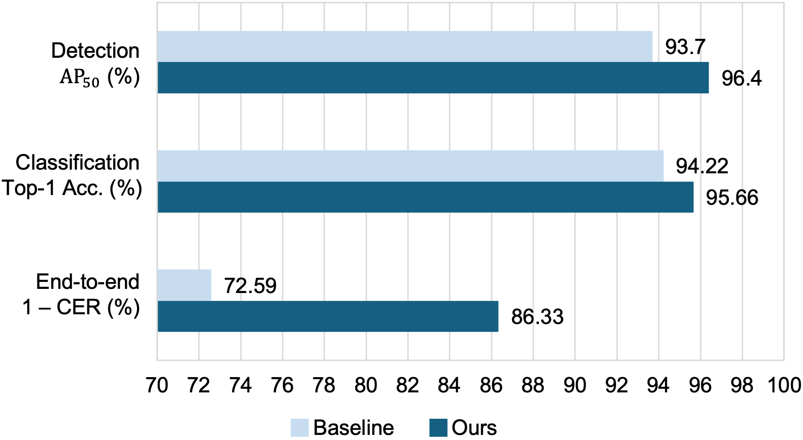
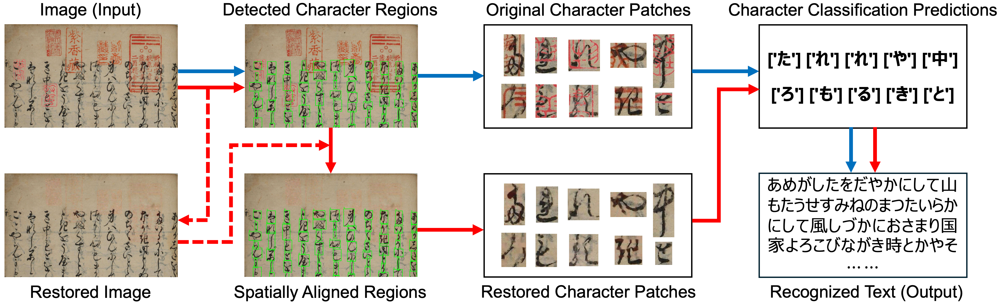
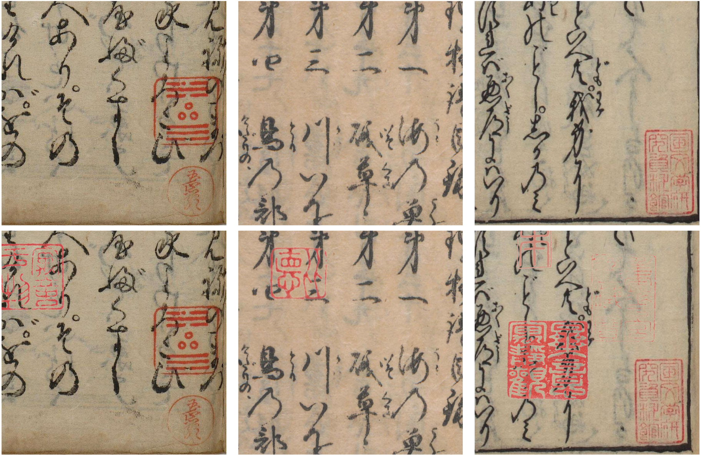

Comparison between the proposed method and the conventional baseline on the synthetic test set. Higher values indicate better performance. The proposed method improves character detection using synthetic data augmentation and character classification through document restoration. End-to-end KCR evaluation recognizes text directly from document images.
Abstract
Kuzushiji was one of the most widely used cursive writing systems in pre-modern Japan. Due to its highly cursive forms and extensive glyph variations, most modern Japanese readers are unable to read Kuzushiji characters. Consequently, recent studies have focused on developing automated Kuzushiji character recognition (KCR) methods, which have achieved strong performance on relatively clean Japanese historical document images. Although seals frequently appear in Japanese historical documents, existing methods often fail to maintain recognition accuracy under seal interference, particularly when seals overlap with characters. To address this challenge, we propose a seal-robust KCR framework. Based on character detection, classification, and ordering, the proposed framework additionally incorporates document restoration to mitigate seal interference, thereby improving overall recognition performance. In addition, we introduce a novel synthetic data augmentation strategy to enhance the performance of character detection models. We further correct annotation errors, reconstruct the dataset, and create a synthetic test set to simulate severe seal interference. Experimental results demonstrate the effectiveness of the proposed framework in mitigating the impact of seal interference on KCR. Compared with a conventional baseline and NDLkotenOCR, it achieves relative character error rate (CER) reductions of 39.7% and 5.9%, respectively, on the real test set, and 50.1% and 41.7%, respectively, on the synthetic test set.
Application Demo
Pipeline

Conventional pipeline (blue flow) and the proposed pipeline (red flow) for seal-interfered Japanese historical document images. Dashed arrows indicate additional processes performed in parallel with character detection without affecting the detection results.
Dataset
(1) Data Correction

Among the 1,000 images, 267 were found to contain missing annotations. To improve annotation quality, we manually added the missing character bounding boxes with the assistance of a Kuzushiji expert. Red bounding boxes denote the annotations newly added in this work, whereas green bounding boxes represent the original annotations.
(2) Synthetic Test Set Construction

We create a synthetic test set to simulate severe seal interference. Seals in the top row are present in real historical docu- ments, while those in the bottom row are synthetically overlaid.
Experiments
(1) Visualization of Character Detection

We present visual examples of the detection results produced by the YOLO11-L model trained with the proposed Synthetic Data Augmentation (SDA) strategy. The top row shows low-confidence detections obtained by the model. Stains in Japanese historical documents may lead to false positives, causing background noise to be mistakenly detected as Kuzushiji characters with confidence scores as low as 0.001. The bottom row shows the detection results after applying a confidence threshold of 0.1, which effectively removes most false positives.
(2) Visualization of Document Restoration

We present visual examples of the document restoration results obtained using the proposed color-based thresholding method with τr = 90 and (τrg, τrb) = (1.3, 1.3).
(3) Visualization of Final Output

We present visual examples of the input images (top row) and the corresponding recognition results projected onto the original document images (bottom row). Despite the complex document layouts, the proposed visualization facilitates intuitive interpretation of historical documents by clearly presenting the recognized characters in their original spatial context.
 The dataset of this work is licensed under a
The dataset of this work is licensed under a